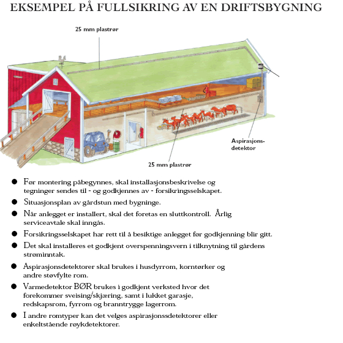
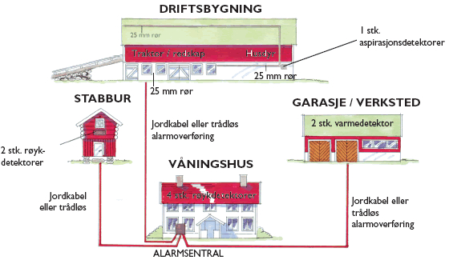

Hvordan virker det?
Hvordan virker brannalarmanlegget?
På grunn av det tøffe miljøet i en driftsbygning vil vanlige detektorer feile etter kort tid. Støv, fukt og ammoniakkgasser er bare noen elementer man må ta hensyn til.

Aspirasjonsdetektoren monteres i driftsbygningen og koples til et rørsystem som festes i taket i fjøs, låve og korntørke. Avhengig av lengden på røret, borres et vist antall hull slik at luftgjennomstrømningen i røret blir riktig. I aspirasjonsdetektoren sitter det en vifte som suger luft igjennom røret. Et filter filtrer bort støvet og en kondensflaske fjerne fuktigheten før luften går inn i detektorkammeret.
Det skal ta maks 60 sekunder fra røyk trenger inn i enden av røret til alarmen går. Ved kjøring med traktor på låven eller ved spyling i fjøs eller melkerom må aspirasjonsdetektoren koples ut for ikke å gi falsk alarm. Dette gjøres enkelt ved å trykke på en fjernkontroll som man henger i traktoren, på nøkkelknippet e.l.
I garasjer, våningshus og andre bygninger velger man optiske røykdetektorer eller varmedetektorer ut i fra miljøet. Selve sentralen plasseres i våningshuset. Her har man et kodetablå som viser alle alarmer og hendelser. En telefonutringer med talemelding varsler inntil 4 personer på mobil eller fast telefon. Sirene monteres i alle bolighus og ute på veggen. I fjøset det vanlig å montere blinklys for ikke å stresse dyrene unødvendig ved alarm.
Systemet kan enkelt bygges ut med innbruddsalarm både i våningshus, kårbolig og eventuelt andre bygg der dette er ønskelig.
Hvilke muligheter har anlegget ?
Brannalarmanlegget har funksjoner langt ut over det å varsle brann. Det er mulig å kople til styring av vifter, foranlegg, temperatur og lignende.

For å få til en av disse funksjonene er det ikke nødvendig med en hel masse tilleggsutstyr. En enkel relesats som kommuniserer med sentralen via en databuss er alt som skal til. Programmet i sentralen vil hente signalet fra en føler, termostat eller liknende og sende dette til det releet som skal styres. Innbruddsvarsling er også enkelt å koble til. Det er kun nødvendig å kople opp bevegelsesdetektorer i de rommene du ønsker å sikre eller magnetkontakter på dørene.
|


 Service og Vedlikehold
Service og Vedlikehold